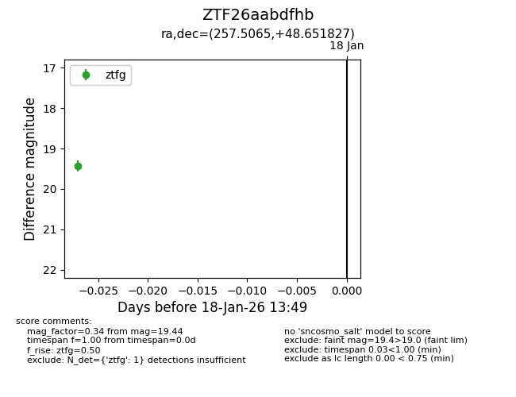
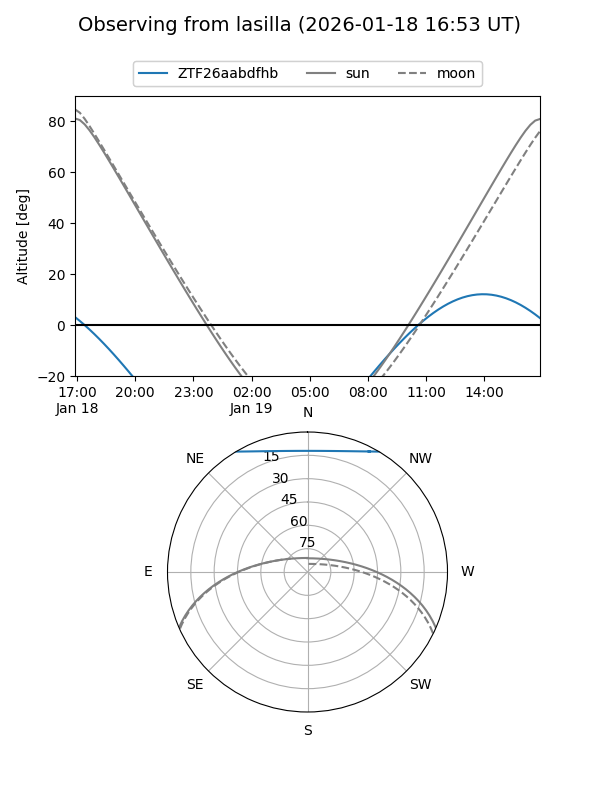
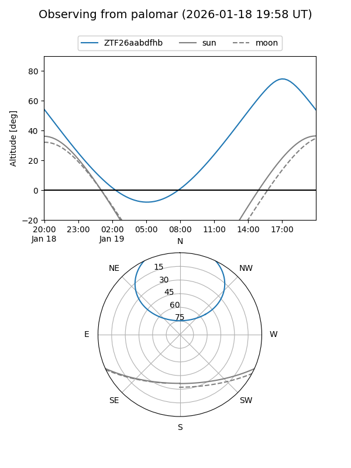

ZTF26aabdfhb
Target ZTF26aabdfhb at 2026-01-18 13:50
Aliases and brokers:
FINK: link
Lasair: link
ALeRCE: link
alt names
ZTF26aabdfhb (ztf,fink_ztf)
Coordinates:
equatorial (ra, dec) = 257.5065,+48.65183
equatorial (HMS+DMS) = 17:10:01.55,+48:39:06.58
galactic (l, b) = (75.0160,+36.44638)
Flags:
Photometry:
last ztfg=19.44
1 ztfg detections
Lightcurve

Visibility


Additional plots